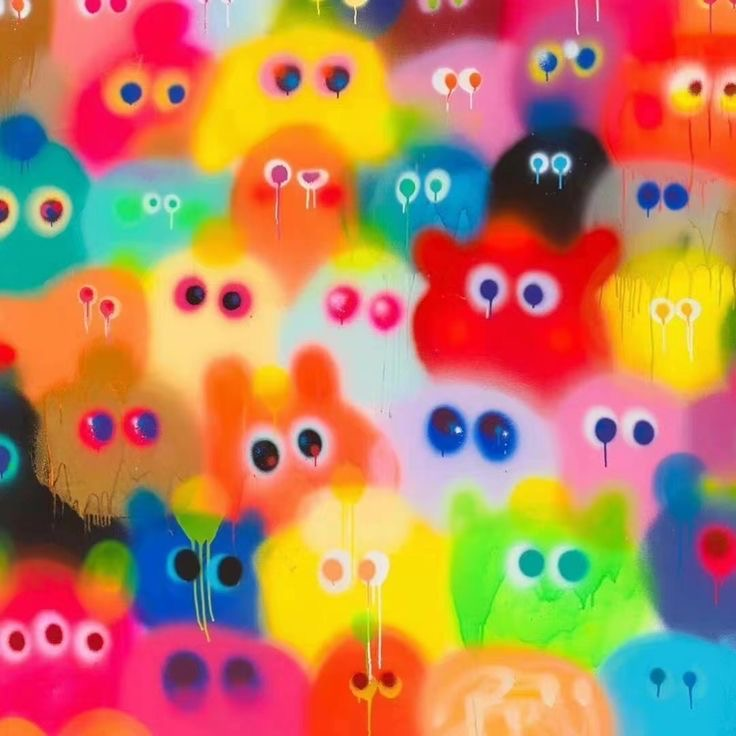

Some Background on Colors

The history of color involves both the development of color theory and the discovery and use of pigments and
dyes. Early humans used natural materials like soil, animal fat, and burnt charcoal to create pigments,
leading to a basic palette of colors like red, yellow, brown, black, and white. Over time, scientific
advancements, exploration, and cultural influences led to the discovery and creation of new colors and a
deeper understanding of how colors are perceived and used.
Colors have perceived properties such as hue, colorfulness (saturation), and luminance. Colors can also be
additively mixed (commonly used for actual light) or subtractively mixed (commonly used for materials). If
the colors are mixed in the right proportions, because of metamerism, they may look the same as a
single-wavelength light.
Because the perception of color is an important aspect of human life, different colors have been associated
with emotions, activity, and nationality. Names of color regions in different cultures can have different,
sometimes overlapping areas. In visual arts, color theory is used to govern the use of colors in an
aesthetically pleasing and harmonious way.